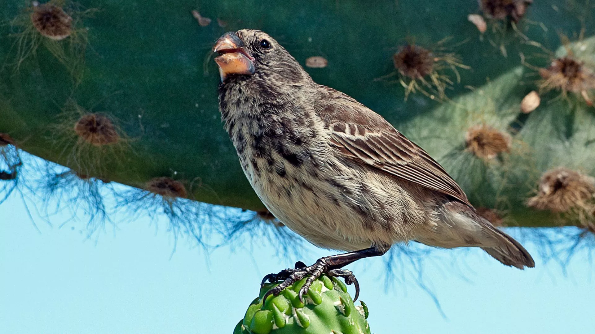
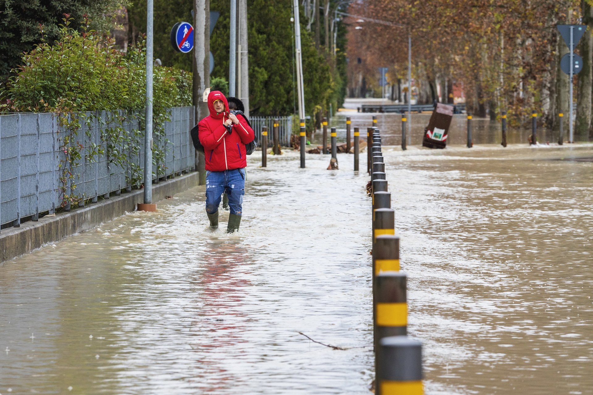
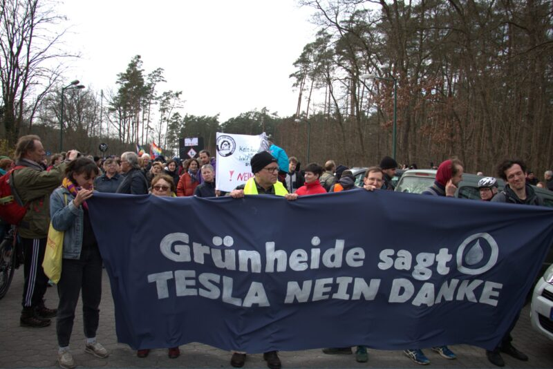
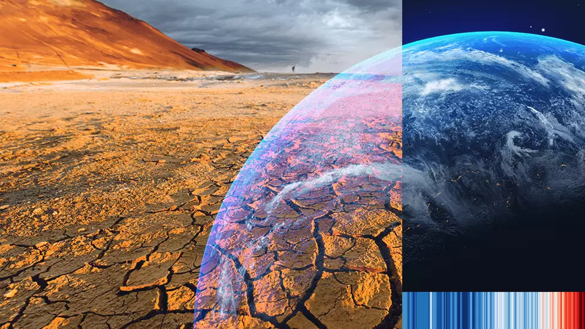
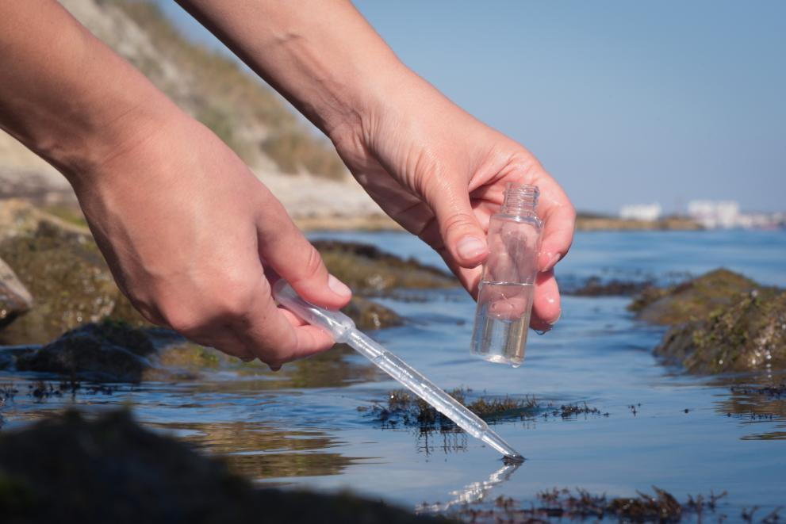

Recent news about the environment

Solar cemeteries and ecological restoration: Positive environmental stories from 2024

Europe is not prepared for rapidly growing climate risks

Tesla EV gigafactory drives Germany's latest climate justice struggle

What is climate change? A really simple guide

Towards better water quality, quantity management and more sustainable use of seas
Go Back